Fase Teórica
¡Aprende a transformar tus ideas en soluciones algorítmicas con Inteligencia Artificial y Python!
Bienvenido a este tutorial, desarrollado con el fin de dar cumplimiento a la Evidencia GA6-220501096-AA4-EV01: Fundamentos en la implementación de componentes frontend (HTML, CSS y JavaScript), correspondiente a la Guía de Aprendizaje No. 6 de la Tecnología en Análisis y Desarrollo de Software (ADSO) del SENA. En este espacio aprenderás cómo formular correctamente prompts con inteligencia artificial para obtener soluciones algorítmicas y transformarlas en programas funcionales utilizando Python.
PROMPTS
¿Qué son?
Son instrucciones claras, precisas, concisas, lógicas y coherentes que el usuario formula en herramientas de Inteligencia Artificial, con el fin de obtener respuestas útiles para la solución que necesita.
Por Ejemplo: Crea un pseudocódigo que permita calcular el promedio de tres calificaciones de un estudiante y determine si aprueba o reprueba, teniendo en cuenta que aprueba con un promedio mayor o igual a 3.0
Caracteristicas
Un Prompt se caracteriza por:
1. Claridad: Ya que expresa la idea de forma entendible, sin enrredos.
2. Precisión: Porque indica exactamente lo que se quiere obtener.
3. Concisión: Es breve, por lo que evita tener información innnecesaria.
4. Contexto: Proporciona información suficiente para guiar la respuesta de la IA.
5. Coherencia: Mantiene una lógica entre lo que se pide y lo que se espera como respuesta.
6. Objetividad: Evita confusiones o instrucciones contradictorias.
Importancia
Un Prompt es importante porque:
- Permite obtener respuestas más precisas y útiles de la Inteligencia Artificial.
- Mejora la calidad de la información generada.
- Ahorra tiempo al reducir respuestas incorrectas o irrelevantes.
- Facilita la automatización de tareas mediante IA.
- Ayuda a comunicar mejor la necesidad del usuario a la herramienta.
¿Cómo se formulan?
Un prompt se formula estructurando una instrucción clara y detallada que le indica a la IA exactamente que hacer, utilizando una combinación de rol, contexto, tarea y formato.
Los elementos esenciales de un Prompt, son:
-Rol: Es la persona que le indica a la IA quién debe ser.
-Contexto: Explica la situación de fondo o el problema real.
-Tarea: Define la acción exacta usando un verbo imperativo.
-Formato de salida: Espercifica cómo quieres recibir la información.
-Restricciones: Establece límites claros.
A continuación, podrás visualizar un video, para mayor comprensión del tema.
SOLUCIONES ALGORITMICAS A DESARROLLAR
Las soluciones algorítmicas que se desean desarrollar, son 3, los cuales, estas son:
| Soluciones Algortimicas Propuestas a desarrollar | ||
|---|---|---|
| Problemática 1 | Problemática 2 | Problemática 3 |
| Cálculo de Calificaciones de un Estudiante | Organización de un Presupuesto Mensual | Organización de tareas diarias |
Para la correcta solución algoritmica de los problemas propuestos, es indispensable tener claro los conceptos de Pseudocódigos y Lenguaje Python
Es por ello, que en esta fase teórica a continuación se abordarán dichos conceptos y luego continuamos con la fase práctica.
PSEUDOCÓDIGO
¿Qué es?
Es una forma de escribir los pasos de un algoritmo utilizando un lenguaje humano sencillo combninado con la estructura lógica de un lenguaje de programación.
En pocas palabras, a pesar que el Pseudocódigo no es un lenguaje de programación como tal, es la herramienta que más nos acerca a un código como tal.
Importancia
Con su implementación, manejo y práctica nos permitiría en un nfuturo escalar en el desarrollo de pequeños programas a grandes programas, gracias al desarrollo previo de la lógica algorítmica.
Programa Común de utilizar
El programa comúnmente utilizado para trabajar con pseudocódigo es PSeInt, una herramienta educativa de software libre diseñada para ayudar a los estudiantes a dar sus primeros pasos en programación, utilizando un sencillo pseudocódigo en español.
Para poder descargar la herramienta PSeInt, puedes acceder al siguiente enlace:
https://pseint.sourceforge.net/?page=descargas.php
Ejemplo: Supongamos que vamos a realizar la conversión de una temperatura dada en grado centígrados a grados fahrenheit. Teniendo en cuentas que la formula es F=(9/5) °C +32
El primer paso para determinar el correcto pseudocódigo es realizar el análisis a la situación presentada.
Por ende, la primera pregunta que nos podemos hacer, es: ¿Cuál es el objetivo o que nos pide el algoritmo?El problema algorítmico nos indica que se desea convertir X cantidad de grados °C digitado por teclado, es decir, digitado por el suaurio a grados °F.
Ahora, se realiza los pasos fundamentales para poder obtener el pseudocódigo correcto, el cual consiste en la identificación de los datos de entrada, procesos y salidas.
Datos de entrada
gc-> Grados °C digitado por teclado.
cgf-> Conversión Grados °F.
Procesos
cgf -> (9/5)* gc + 32.
Datos de Salida
cgf
Con el análisis que se hizo anteriormente, podemos identificar que se necesitan 2 variables para emplear el algoritmo correctamente, las cuales son gc-> grados °C digitado por teclado y cgf-> conversión grados °F y la variable cgf será la que guardará la resultado final, mediante la formula que ya se conoce, dada por el mismo problema algorítmico.
Asimismo, el paso a paso del análisis que se realizo anteriormente, es:
1. El usuario digita primero la cantidad de grados °C que desea convertir a grados °F.
2. Se emplea la formula cgf -> (9/5)* gc + 32.
3. Finalmente, el computador nos mostrará la información que necesitamos, que es la conversión en grados °F en pantalla, debido a que se imprime por pantalla la variable que realiza la formula, la cual es cgf.
Con lo realizado anteriormente, finalmente puedo constuir el Pseudocódigo para el problema algorítmico.
Algoritmo EjemploPseudocodigo
Definir gc, cgf Como Real
Escribir 'Este es un algoritmo para convertir o pasar los grados °C a grados °F'
Escribir'Ingresa los grados °C a convertir'
Leer gc
cgf <- (9/5)*gc+32
Escribir 'Los grados Fahrenheit, son: ', ' ', cgf, ' ', '°F'
FinAlgoritmo
Ahora, por medio de PseInt, hare la prueba de la ejecución del Pseudocódigo que realice anteriormente.
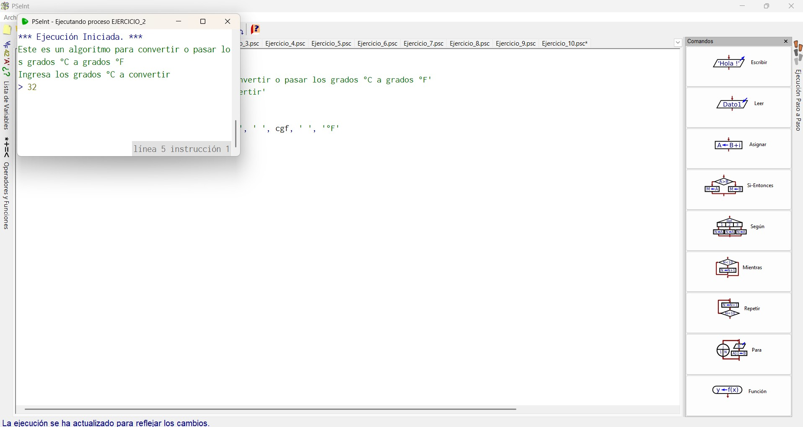
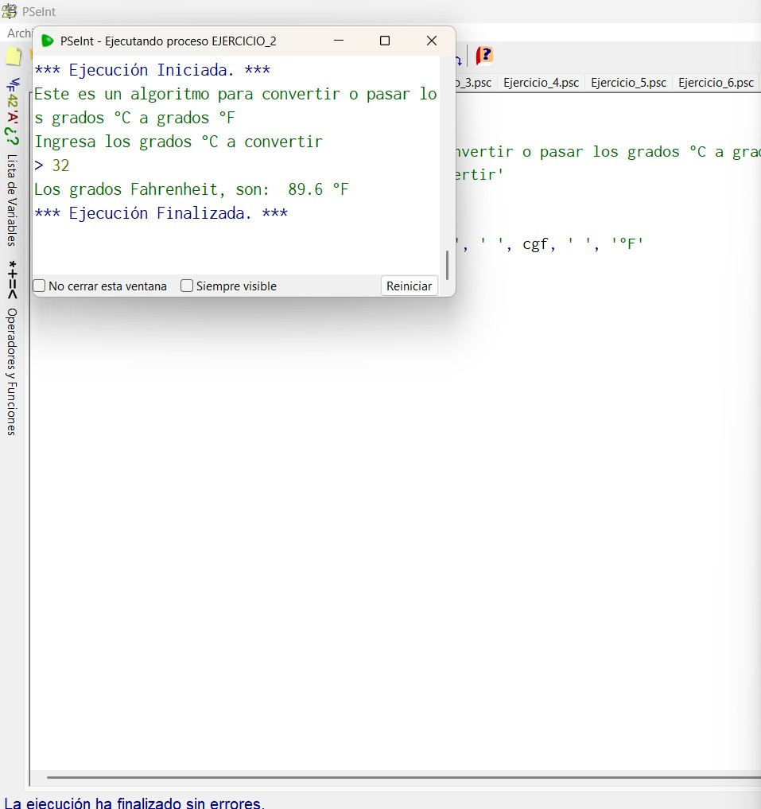
Teniendo en cuenta las capturas, nos podemos fijar que el usuario digito por cantidad de grados °C que desea convertir a grados °F, que en este caso, como ejemplo, fue 32 °C.
Ahora, empleamos la formula de manera manual, para verificar si el resultado dado en la prueba es correcta y con ello, comprobar si es correcto el Pseudocódigo empleado o no.
Formula
cgf -> (9/5)*gc+32 , Donde:
gc-> 32, Entonces:
cgf -> (9/5)*(32)+32
cgf -> 1,8*(32)+32
cgf -> 57,6+32
cgf -> 89,6
La Cantidad de 32 °C en °F, es: 86,9.
Es importante recordar que para la correcta ejecución de la formula, se debe seguir la jerarquía de operaciones, que en este caso, se desarrollan primeros los parentesis () y luego la multiplicación * y finalmente la suma +.
PYTHON
¿Qué es?
Es un lenguaje de programación de alto nivel, de código abierto, interpretado y multipropósito.
Actualmente se ha convertido en uno de lenguajes de programación más populares del mundo, debido a su simplicidad y versatilidad.
Y se utiliza en áreas que van desde el desarrollo web hasta la inteligencia artificial y la ciencia de datos.
Historia y Origen
Python fue creado por el programador Guido van Rossum a finales de los años 80.
-Origen: Guido Van Rossum comezó el desarrollo de Python en diciciembre de 1989 en el Centro para las Matemáticas y la Informática (CWI) en los Países Bajos. Lo diseñó como un pasatiempo navideño para dar continuidad al lenguaje ABC, del cual había sido participe, pero solucionando sus fallos y añadiendo manejo de excepciones.
-Nombre: Su nombre se debe a que Guido Van Rossum era fanático del grupo cómico británico Monty Python, por lo que decidió bautizar el proyecto como "Python" en su honor.
-Lanzamiento: La primera versión pública (0.9.0) se publicó en febrero de 1991. La versión 2.0 llego en el año 2000 y la versión 3.0 se lanzó en 2008.
Carcaterísticas
-Legible y simple: Su sintaxis se parece mucho al inglés, lo que permite que sea fácil de leer y escribir.
-Interpretado: No necesita compilar el código, es decir, convertirlo a binario antes de ejecutarlo. El código se lee y ejecuta línea por línea directamente
-Multiplataforma: El mismo código funciona en distintos sistemas operativos, como: Windows, macOs, Linux, etc.
-Multiparadigma: Soporta la Programación Orientada a Objetos (POO), programación imperativa y funcional, adaptándose al estilo que requiera el proyecto que se desea realizar.
-Gran comunidad y ecosistema: Cuenta con miles de librerarias gratuitas, es decir, módulos de código ya hechos, que permiten programar inteligencia artificial, gráficos, servidores y automatizaciones con muy pocas líneas de código.
Sintaxis o Palabras Claves
Las palabras clave son términos reservados porPython que tienen un signfiicado fijo y no pueden utilizarse como nombres de las variables o funciones que se vayan a utilizar en algún proyecto.
Alguna de las más importantes, son:
-Estructuras de decisión: if= (si condicional), elif= (sino, si) y else= (sino).
-Bucles o Ciclos: for= (para), while= (mientras), break= (romper ciclo), continue= (saltar a la siguiente iteración)
-Lógica booleana: True= (Verdadero), False= (Falso), and= (y), or= (o), not= (no).
-Funciones y Clases: def= (definir función), return= (devolver valor), class= (definir clase)
-Manejo de datos: import= (traer librerias), in= (dentro de), is= (es).
Por otro lado, la sintaxis de Python se destaca por eliminar elementos visuales redundatso de otros lenguajes, comon llaves {} o los puntos y comas ;.
En su lugar, utiliza la indentación, es decir, los espacios o tabulaciones al inicio de la línea, de forma obligatorio con el fin de delimitar los bloques de código.
Un ejemplo de la sintaxis utilizada en Python, puede ser el siguiente:
edad=20
if edad >= 18:
print("Eres mayor de edad")
else:
print("Eres menor de edad")
FASE PRÁCTICA
Una vez leída, comprendida y estusdiada la fase teórica, procedemos realizar la fase práctica, el cual consiste en dar solución a los 03 problemas algorítmicos mencionados en la fase teórica en el tema: Soluciones Algorítmicas Propuestas a desarrollar.
PROBLEMÁTICA 1: CALCULO DE CALIFICACIONES DE UN ESTUDIANTE
Se debe tener en cuenta que la herramienta a utilizar de la IA sera ChatGPT.
El prompt que utilizaré para dar con la solución a la problemática 1, es el siguiente:
“Crea un pseudocódigo que permita calcular el promedio de tres calificaciones de un estudiante y determine si aprueba o reprueba, teniendo en cuenta que aprueba con un promedio mayor o igual a 3.0.”
El resultado arrojado es el siguiente:
Algoritmo CalcularPromedio
Definirnota1, nota2, nota3, promedio Como Real
Escribir "Ingrese la primera nota:"
Leer nota1
Escribir "Ingrese la segunda nota:"
Leer nota2
Escribir "Ingrese la tercera nota:"
Leer nota3
promedio <- (nota1 + nota2 + nota3) / 3
Escribir "El promedio es: ", promedio
Si promedio >= 3.0 Entonces
Escribir "El estudiante aprueba"
Sino
Escribir "El estudiante reprueba"
FinSi
FinAlgoritmo
Ahora, realizaré un análisis corto del pseudocódigo dado anteriormente.
Análisis Corto del Pseudocódigo:Este pseudocódigo soluciona la problemática al solicitar tres notas, calcule su promedio y evalúe si el estudiante aprueba o no. A mi concepto y por ser estudiante actual de la tecnología de Análisis y Desarrollo de Software, considero que se entiende fácilmente el uso de variables, entrada de datos y estructuras condicionales. Así mismo, puedo mencionar que la parte que puede requerir mayor estudio es la estructura del condicional.
Pero, ¿Por qué se emplea una estructura condicional en este pseudocódigo? Esto, es porque la problemática busca no solo calcular el promedio del estudiante sino también evaluar, es decir, determinar o comparar de acuerdo a su calificación si el estudiante aprueba o no la asignatura.
Y por eso, considero que el mayor grado de habilidad de estudio o destreza para una persona que apenas esta comenzando con la programación es el uso de condicionales, ya que debe aprender a estructurarlo, ejecutarlos de manera correcta, lógica y coherente.
Momento de la ejecución del Pseudocódigo en PseInt:Para el momento de la ejecución del pseudocódigo, vamos a suponer que el alumno Sebastian Vanegas cuenta con 3 calificaciones, las cuales, estas son:
-Nota 1:3.0
-Nota 2:3.5
-Nota 3:2.5
Por ende, su promedio, sería:
PROMEDIO=(3.0 + 3.5 + 2.5) / 3
PROMEDIO=(9.0) / 3
PROMEDIO=
Teniendo en cuenta que el promedio obtenido por el estudiante es 3.0 y la condición lógica indica que la nota debe ser mayor o igual a 3.0 para el estudiante poder aprobar.
Resultado Final: El estudiante aprueba
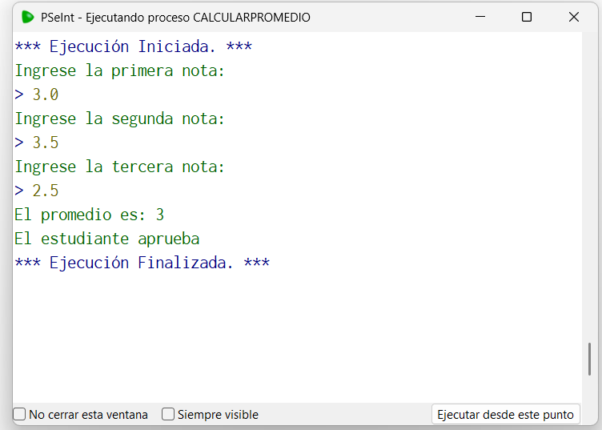
Ahora, vamos a convertir el Pseudocódigo dado anteriormente para utilizarlo con el lenguaje Python mediante Visual Studio Code.
Por lo que se copia el Pseudocódigo y se ejecuta el siguiente Prompt en ChatGTPCreame el código fuente para ejecutarlo en Visual Studio Code utilizando Python.
El resultado que obtenemos, es el siguiente:
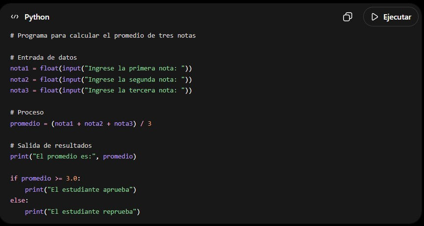
Análisis del Código obtenido: El código es sencillo, porque se desarrolla con secuencia lógica, es decir, primero se le
solicitan al usuario los datos de entrada, por medio de input(), es decir, aquellos datos que son
indispensables para la solución del algoritmo o problema a solucionar, que en este caso son las
3 notas del estudiante, así mismo estos datos serán convertidos a números reales mediante el
flotat().
Posteriormente, se realiza la formula aritmética para calcular el promedio que es donde
primero se realiza la suma de las tres notas y de ese resultado se divide en la cantidad de notas,
que en este caso es 3.
Finalmente, se hace la condición lógica, por medio del si/if, donde se va a comparar si el
promedio obtenido es mayor o igual a 3.0, en donde, si se cumple dicha condición, en pantalla
se imprima (“El estudiante aprueba”), y sino se cumpla imprima (“El estudiante reprueba”).
Ejecución del Código Python en Visual Sutdio Code:Para su ejecución, se deben realizar los siguientes pasos:
Paso 1. Se ingresa a Visual Studio Code y se hace la siguiente ruta:
• File.
• Open Folder
• Seleccionamos el lugar de destino de la carpeta a crear y le establecemos un nombre
y seleccionamos la misma.
Paso 2. Se crea el archivo que en este caso es Promedio y como vamos a utilizar Python, su
extensión es .py
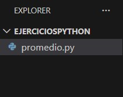
Paso 3.Una vez establecido el archivo con la extensión, copiamos el código fuente dado anteriormente.
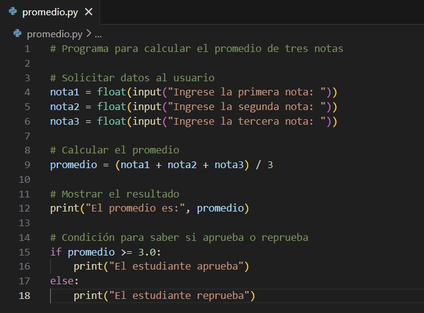
Paso 4.En cualquier parte del entorno de Visual Studio Code, con el ratón o mouse, damos clic derecho y seleccionamos la opción Run Python- Run Python File in Terminal.
Paso 5.Finalmente, Se abre el terminal y empieza a correr el código fuente.
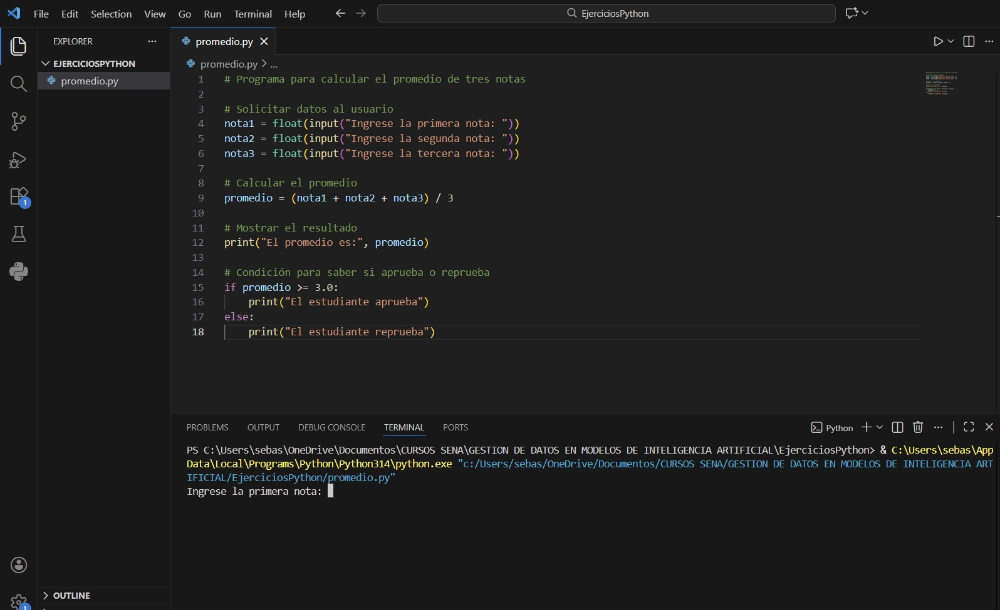
Paso 6. Voy a utilizar los mismos datos cuando se realizó la verificación del pseudocódigo en PSeInt.
En este caso, las notas, eran:
• Nota 1- 3.0.
• Nota 2- 3.5.
• Nota 3- 2.5
Por ende, el promedio del alumno fue 3.0 y por lo tanto, el estudiante queda aprobado.
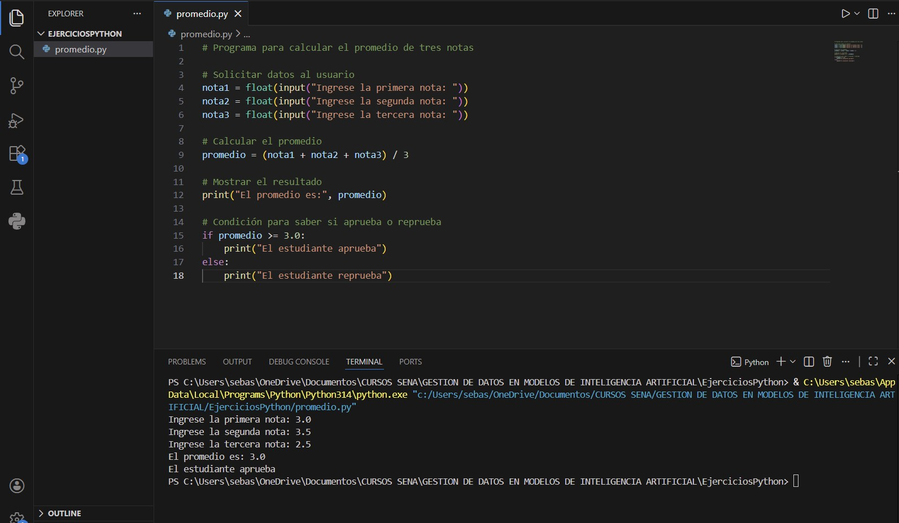
PROBLEMÁTICA 2: ORGANIZACIÓN DE UN PRESUPUESTO MENSUAL
El prompt que utilizaré para dar con la solución a la problemática 2, es el siguiente:
“Crea un pseudocódigo que permita ingresar ingresos mensuales y gastos, y determine si la persona tiene ahorro o déficit.”.
El resultado arrojado es el siguiente:
Algoritmo PresupuestoMensual
Definir ingresos, gastos, saldo Como Real
Escribir "Ingrese el total de ingresos:"
Leer ingresos
Escribir "Ingrese el total de gastos:"
Leer gastos
saldo <- ingresos - gastos
Si saldo > 0
Escribir "Tiene un ahorro de: ", saldo
Sino
Si saldo = 0 Entonces
Escribir "No tiene ahorro ni deuda"
Sino
Escribir "Tiene un déficit de: ", saldo
FinSi
FinSi
FinAlgoritmo
Análisis del Pseudocódigo:Este pseudocódigo permite comparar los ingresos y gastos para determinar la situación financiera. Es claro por su lógica y muestra el uso de estructuras condicionales anidadas, es decir, que una condición esta dentro de otra.
Por ende, considero que la parte que puede requerir mayor comprensión es la estructura de decisiones múltiples, especialmente cuando se evalúan varios casos, como: Ahorro, Equilibrio o Déficit.
Para el momento de la ejecución del pseudocódigo, vamos a suponer que mi persona, es decir, Sebastian Vanegas tiene el siguiente registro de ingresos y gastos:
• Ingresos - $2.000.000
• Gastos - $1.500.000
Teniendo en cuenta los siguientes datos, vamos a analizar paso a paso el pseudocódigo para verificar si funciona correctamente al momento de ejecutarlo.
Paso 1. Obtenemos el saldo total, en el cual se da con la diferencia entre los ingresos y gastos, de la siguiente manera:
Saldo = Ingresos – Gastos
Ahora reemplazamos valores,
Saldo = $2.000.000 - $1.500.000
Saldo = $500.000
Es decir, el saldo que posee sebastian es de $500.000.
Paso 2. Teniendo en cuenta el saldo obtenido en el paso 1, se pasa a hacer la comparación lógica, según el pseudocódigo, de la siguiente manera:
¿El saldo es mayor a 0?
Por lógica, entendemos que, si lo es, ya que, como se había mencionado anteriormente es de $500.000.
Por ende, como resultado final del pseudocódigo vamos a tener que en pantalla se imprimirá una cadena de caracteres o texto que dirá: “Tiene un ahorro de:” junto al saldo,
Como se puede observar a continuación:
Tiene un ahorro de: 500.000
Y con esto, ya termina la ejecución del pseudocódigo.
Vamos, ahora a verificar lo mencionado anteriormente, en las siguientes imágenes:
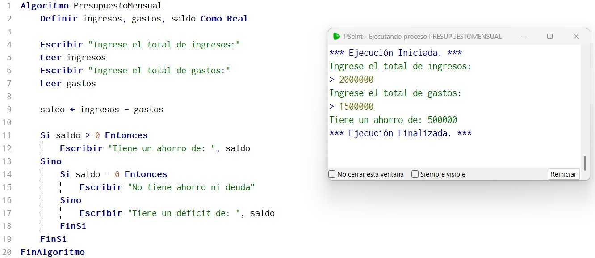
Ahora, vamos a convertir el Pseudocódigo en lenguaje Python mediante Visual Studio Code.
Por lo que se copia el Pseudocódigo y se ejecuta el siguiente Prompt en ChatGTP: Creame el código fuente para ejecutarlo en Visual Studio Code utilizando Python.
El resultado que obtenemos, es el siguiente:
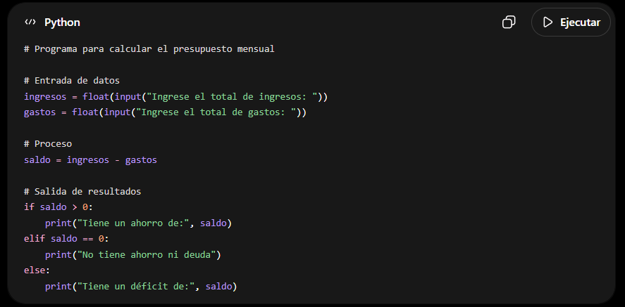
Análisis del Código: El código es sencillo, porque se desarrolla con secuencia lógica, es decir, primero se le solicitan al usuario los datos de entrada, por medio de input(), es decir, aquellos datos que son indispensables para la solución del algoritmo, en el cual son los ingresos y los gastos, así mismo estos datos serán convertidos a números reales mediante el flotat().
Posteriormente, se realiza la formula aritmética para obtener el valor del saldo, que en este caso es la diferencia entre los ingresos y los gastos.
Finalmente, se hace la condición lógica, por medio del si/if, donde se hace la comparación lógica y se verifica si el saldo es mayor (>) que 0, y si esto se cumple, imprima en pantalla (“Tiene un ahorro de:”, saldo), es decir en pantalla se mostrará la cadena de caracteres junto al valor obtenido del saldo. Así mismo, se utiliza el elif, es decir, una condición está dentro de otra desde que esta se cumpla y a esto se le llama condiciones anidadas, y acá se pregunta sino si el saldo es igual a 0, y si se cumple imprima en pantalla (“No tiene ahorro ni deuda”) sino entonces imprima (“Tiene un déficit de:” , saldo).
Considero que lo más complejo al momento de entender el código fuente, es el emplear correctamente las condiciones anidadas, ya que, si se escribe mal, generará error y así no se podría ejecutar el programa.
Ejecución del Código en Visual Studio Code:Se siguen los 6 pasos descritos en la problemática 1, lo que se diferencia, es lo siguiente:
• El archivo se llamará PresupuestoMensual.py
• Se utilizarán los datos datos con anterioridad, en el cual los ingresos son $2.000.000 y los gastos son $1.500.000, lo cual obtendremos que el saldo es de $500.000. Tal como lo muestra, la siguiente imagen:
PROBLEMÁTICA 3: ORGANIZACIÓN DE TAREAS DIARIAS
El prompt que utilizaré para dar con la solución a la problemática 3, es el siguiente:
“Crea un pseudocódigo que permita registrar una lista de tareas diarias y mostrarlas al final”.
El resultado arrojado es el siguiente:
Algoritmo Algoritmo ListaDeTareasDiarias
Definirtareas Como Cadena
Definir lista Como Cadena
Definir i, contador Como Entero
Definir respuesta Como Cadena
Dimension lista[100] // Arreglo para almacenar hasta 100 tareas
contador <- 0
Repetir
Escribir"Ingrese una tarea diaria:"
Leer tareas
contador <- contador + 1
lista[contador] <- tareas
Escribir "¿Desea agregar otra tarea? (SI/NO)"
Leer respuesta
Hasta Que respuesta = "NO"
Escribir "----- LISTA DE TAREAS DIARIAS -----"
Para i <- 1 Hasta contador Hacer
Escribir i, ". ", lista[i]
FinPara
FinAlgoritmo
Análisis del Pseudocódigo: Este pseudocódigo resuelve la necesidad de registrar múltiples tareas diarias y guardar dicha información en un arreglo.
Pero, ¿Qué es un arreglo? Podría determinar que un arreglo es una estructura que permite almacenar datos de manera ordenada y organizada en posiciones.
Además, se utiliza un contador para llevar el número de tareas registradas.
Finalmente, se recorre el arreglo mediante un ciclo para mostrar todas las tareas ingresadas de forma ordenada.
Por ende, considero que las partes que requieren mayor comprensión del pseudocódigo son el uso de arreglos y ciclos.
Momento de la ejecución del Pseudocódigo en PseInt: Supongamos que Sebastian Vanegas, para el día de mañana necesita hacer las siguientes tareas:
• Levantarse, hacer su cama y bañarse.
• Desayunar.
• Hacer aseo en la oficina.
• Reclamar refrigerios.
• Hacer labores de archivo durante el resto de mañana.
• Almorzar.
• Hacer labores administrativas que se le asignen.
• Cenar.
• Realizar trabajos pendientes del tecnólogo o del curso.
• A las 11 de la noche, ir a descansar.
Se debe tener en cuenta, que una vez el usuario ingrese la primera tarea, de allí en adelante el computador preguntará al usuario si desea registrar otra tarea, en caso, de que su respuesta sea no, se imprime en pantalla la lista de tareas digitadas de forma enumerada y ordenada.
A continuación, se realizará la ejecución del algoritmo en PSeInt.
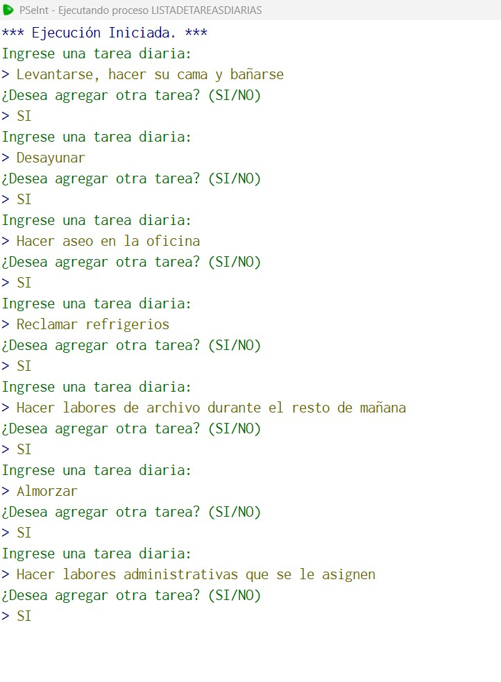
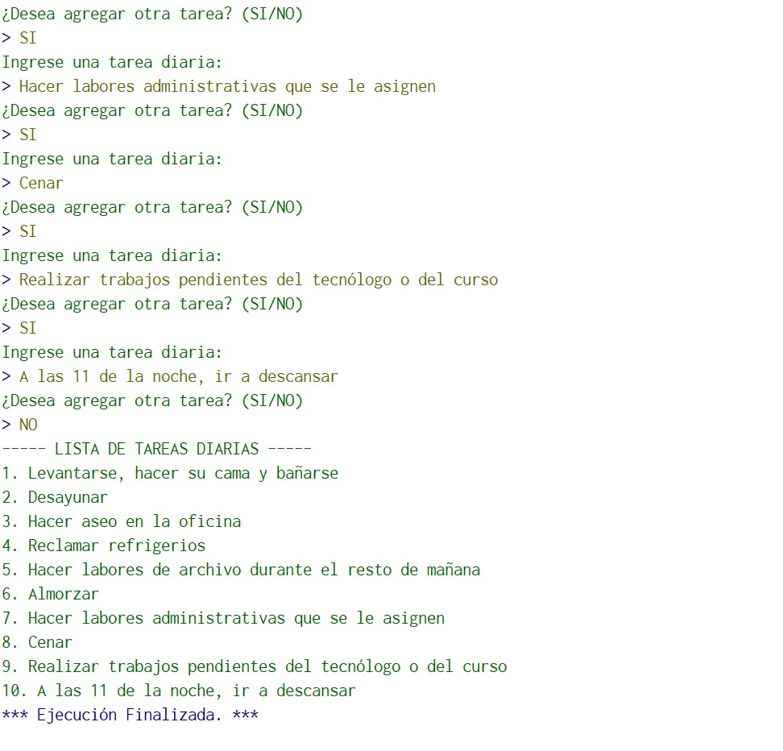
Ahora, vamos a convertir el Pseudocódigo en lenguaje Python mediante Visual Studio Code.
Por lo que se copia el Pseudocódigo y se ejecuta el siguiente Prompt en ChatGTP: Creame el código fuente, para ejecutarlo en Visual Studio Code utilizando Python.
El resultado que obtenemos, es el siguiente:
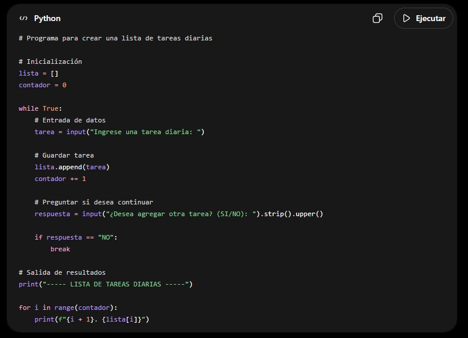
Análisis del Código Fuente Obtenido: El código fuente Python obtenido funciona similar a una lista, donde el usuario puede ir escribiendo varias tareas del día. Donde, cada tarea que ingresa esta se guarda automáticamente en una lista y al final el programa las muestra organizadas con su respectivo número.
Primero, el programa inicia con una lista vacía. Luego entra en un ciclo que se repite varias veces, permitiéndole al usuario escribir tareas una por una. Después del registro de cada tarea, el programa pregunta si desea agregar otra. Si la respuesta es “NO”, el programa se detiene y muestras todas las tareas guardas.
Considero, que lo mas complejo de entender es el ciclo While True junto a la palabra break. Aunque esto realmente significa que el programa se repite infinitamente, pero se detiene cuando el usuario escribe un “NO” en la validación de seguir o parar los registro.
Además, puede costar un poco entender cómo se guardan las tareas con append(), teniendo en cuenta que esto permite que la lista crezca sin necesidad de definir un tamaño fijo.
Ejecución del Código Fuente en Visual Studio Code: Se siguen los 6 pasos descritos en la problemática 1, lo que se diferencia, es lo siguiente:
• El archivo se llamará ListaTareasDiarias.py
• Se utilizarán los datos mencionados anteriormente, en el cual, son 10 tareas que realizaría Sebastian Vanegas el día de mañana, como:
- Levantarse, hacer su cama y bañarse.
- Desayunar.
- Hacer aseo en la oficina.
- Reclamar refrigerios.
- Hacer labores de archivo durante el resto de mañana.
- Almorzar.
- Hacer labores administrativas que se le asignen.
- Cenar.
- Realizar trabajos pendientes del tecnólogo o del curso.
- A las 11 de la noche, ir a descansar.
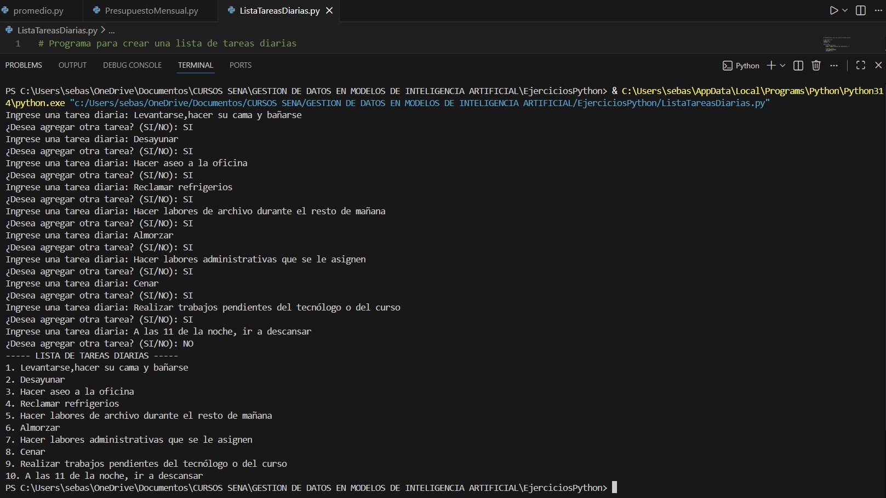
ACERCA DE MÍ
Sobre el creador del Sitio Web
El creador del presente sitio web y tutorial es el aprendiz Vanegas Díaz Sebastian.
A continuación, te hablaré un poco más de mí:
| Acerca del Creador del Sitio Web |
|---|
| Cordial Saludo estimado usuario, Mi nombre es Sebastian Vanegas Díaz, tengo 23 años y a la fecha cuento con un Técnico en Sistemas, y un Tecnólogo en Negociación Internacional, y actualmente soy aprendiz de la Tecnología de Análisis y Desarrollo de Software (ADSO). Soy el creador del presente sitio web, el cual se basa en un tutorial sobre el uso adecuado de los prompts para desarrollar soluciones algoritmicas, con ayuda de la IA. Espero que sea de gran ayuda la presente información. |